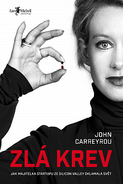

Autor: John Carreyrou
Žánr: Populárně-naučné
Hodnocení: + 2
Seznamte se s nejžhavějším startupem v Silicon Valley založeným Elizabeth Holmesovou, která se po roce studia rozhodla opustit Stanford, aby se mohla plně věnovat svému přelomovému vynálezu. Svou vizí mnohé uchvátila natolik, že ji začali označovat za Steva Jobse v sukních. Velké ambice, bohulibé poslání, strhující nadšení a skvělý tým zajistily firmě přízeň investorů, kteří do ní nalili několik set milionů dolarů. Hodnota Theranosu vystoupala k neuvěřitelným devíti miliardám dolarů.
„Když se kniha připravovala do tisku, čelil John Carreyrou ze strany Elizabeth Holmesové a jejích přisluhovačů výhrůžkám a zastrašování, byl skandalizován a tajně sledován. Jeho nadřízení ve Wall Street Journal ho však podrželi a nezalekli se ani špičkových právníků Theranosu, hrozících soudními žalobami. To, že mohla Zlá krev vyjít, je zásluha mnoha statečných a neúplatných lidí, pro které čisté svědomí znamená víc než sebevětší peníze.“ - knihcentrum.cz
Tereza Černá
Opravdu úžasný příběh o ženě se snem (ale bez jakékoli představy, jak jej realizovat), která dokázala tahat za nos taková esa. Osobně z toho mám jeden závěr: nejen ve smrti, ale i v hlouposti jsme si všichni rovni.
Barbora Podzimková

Jen těžko uvěřitelný příběh o obrovském podvodu. Ze začátku jsem se trochu ztrácela v záplavě jmen, nicméně když jsem se ve všech těch postavách zorientovala, tak jsem knihu zhltnula skoro jedním dechem.